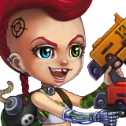
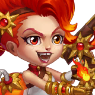
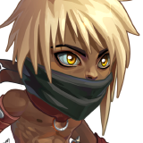
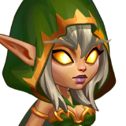
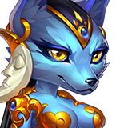

ULTIMATE
Rapid Fire
Daredevil attacks the nearest enemy five times. Every subsequent shot increases its damage by 25%, causing the pressure to escalate throughout the sequence.

The whole build on one screen. Every recommendation is explained in full further down.

Build the Critical Hit engine, create more attacks through Fire Support, and give Daredevil enough time to turn growing Physical Attack into overwhelming pressure.
Daredevil is a backline Marksman whose opening damage does not tell the full story. She wants momentum, Critical Hits, additional attacks and enough time for her Physical Attack to continue growing throughout the battle.
Daredevil attacks the nearest enemy five times. Every subsequent shot increases its damage by 25%, causing the pressure to escalate throughout the sequence.
Daredevil throws a bomb into the center of the enemy formation, damaging heroes inside the blast radius. The bomb always deals Critical Damage.
Whenever an ally positioned behind Daredevil successfully performs a basic attack, Daredevil responds with an additional basic attack of her own.
Every Critical Hit Daredevil deals permanently increases her Physical Attack for the remainder of the battle.
Daredevil should not be viewed as a collection of isolated Skills. Her mechanics feed into one another and can create a snowball as the battle continues.
Daredevil currently has five Skins covered by this guide. Critical Hit Chance takes first priority because Critical Hits directly support the mechanic behind Thirst for Blood.
CRITICAL HIT CHANCE
PHYSICAL ATTACK
HEALTH
ARMOR
DEFAULT AGILITY
Critical Hit Chance + Physical Attack. Two fundamental offensive stats for Daredevil.
Provides a teamwide Physical Attack bonus when Daredevil activates Rapid Fire.
Provides Agility, contributing additional Physical Attack and value against physical opponents through Main Stat.
Daredevil wants the additional Physical Attack and Health. She is a damage dealer whose strength can increase as the fight continues, so she needs enough development to remain alive and keep the engine running.
Provides Agility together with Armor Penetration, an important offensive stat when Daredevil faces properly developed defenses.
Reverses the offensive emphasis by combining Armor Penetration with direct Physical Attack.
Different allies support different parts of Daredevil's engine. These interactions should be considered together with positioning and the matchup rather than as one mandatory team.
Rhythm of War can add significant extra damage to Daredevil's Critical Hits.

Can help Daredevil create more Critical Hits and therefore more opportunities to activate Thirst for Blood.

Can contribute to her Critical Hit pressure through Golden Feathers.

His clones can create additional successful regular attacks capable of producing more Fire Support triggers.

Her shadow copy can contribute additional regular attacks and therefore interact with Fire Support.

Can provide Armor Penetration support, helping Daredevil's physical damage become more effective.

Another source of Armor Penetration support for Daredevil's physical pressure.
His shield can contribute Attack Speed and help accelerate Daredevil's attacking process.

Glacial Fortress can slow down what the enemy is trying to accomplish while Daredevil's side develops pressure.
Repeated control interferes with Daredevil's rhythm. Every interruption is time she is not attacking, generating the same pressure or moving toward another Rapid Fire.

When Daredevil produces AoE damage through Big Badda Boom, Corvus' Altar can retaliate against her, turning her own aggression into incoming punishment.

Somna can interfere with two important parts of Daredevil's offensive profile: Physical Attack and Armor Penetration.
Daredevil is not simply five shots from Rapid Fire. She is a system.
Critical Hits feed Thirst for Blood. Thirst for Blood feeds Physical Attack. Fire Support creates additional attacks. Additional attacks create Energy. Energy brings Rapid Fire back.
Prioritize her Critical Hit engine, give her the Physical Attack and survivability needed to capitalize on it, respect Armor Penetration and pay close attention to the heroes positioned around her.
Give Daredevil the support, positioning and time she needs, and those bullets can start feeling like missiles.
Watch the full guide for the complete explanation of Daredevil's mechanics, development priorities, synergies and counters.